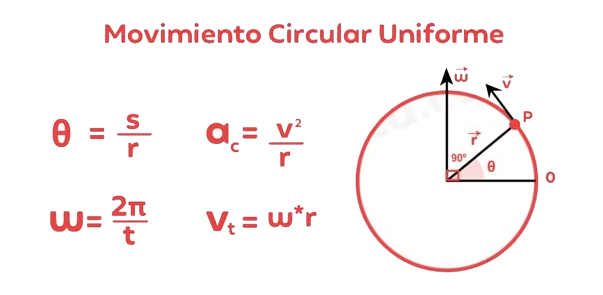
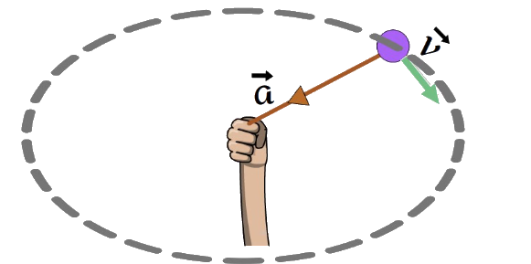
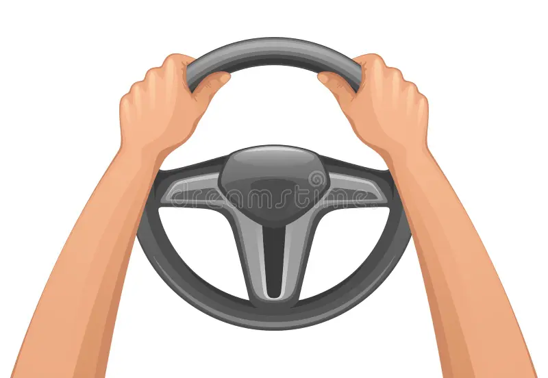
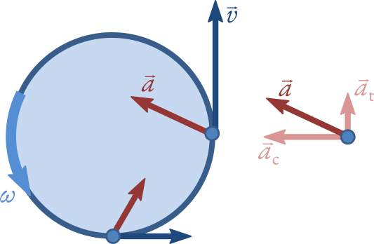
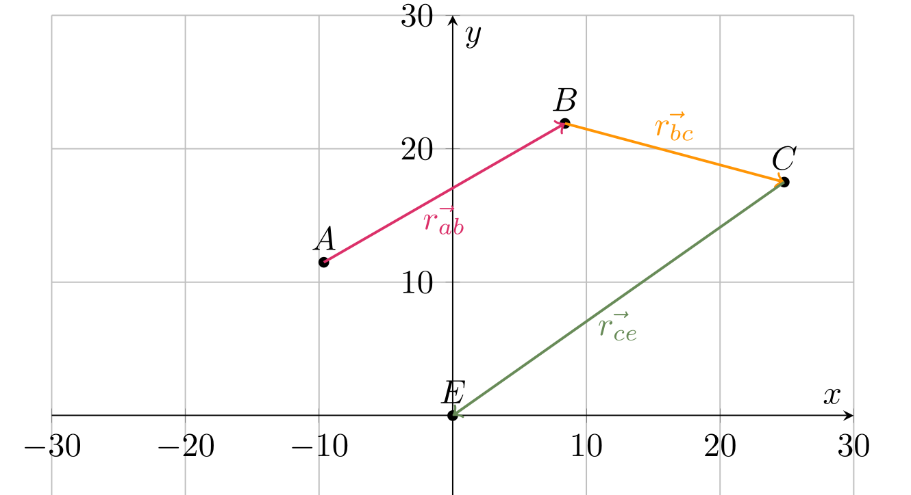
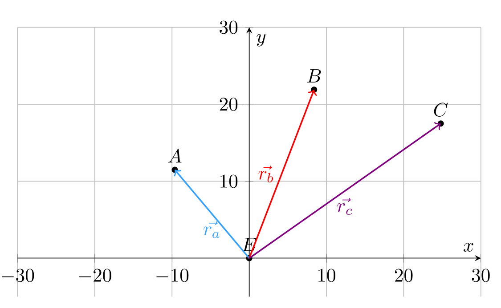
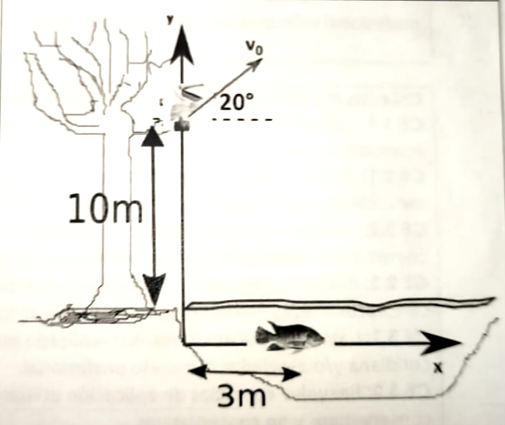

El movimiento circular es un movimiento periódico, en el cual un objeto se mueve a lo largo de una trayectoria circular. Este movimiento puede ser uniforme o no uniforme, dependiendo de si la velocidad angular es constante o no.

La aceleración centrípeta es la aceleración hacia el centro de la trayectoria circular, y se define como:
La aceleración tangencial es la aceleración tangente a la trayectoria circular, y se define como: a_t = \frac{d v}{d t} a_r = \frac{v^2}{r}

La aceleración total es la raíz de la suma de la aceleración centrípeta y la aceleración tangencial, y se define como: a = \sqrt{a_t^2 + a_r^2}
La velocidad angular es la razón de cambio del ángulo (en radianes) con respecto al tiempo, y se define como: \omega = \frac{\theta}{t}
La velocidad es la velocidad del objeto si se dejara de aplicar la fuerza centrípeta, y se define como: | \vec{v_t} | = \frac{2\pi r}{T} = \omega r
Un volante de 3 metros de diámetro gira a 120 revoluciones por minuto. Calcula frecuencia y período de un punto sobre el borde.

Primero, pasemos RPM a rad/s: \omega = 120 \frac{rev}{min} \cdot \frac{2\pi rad}{1 rev} \cdot \frac{1 min}{60 s} \omega = 12.56 \hspace{0.2cm} [rad/s] Recordemos que el período es el tiempo que demora en dar una vuelta completa, y la frecuencia es la cantidad de vueltas que da en un segundo.
La frecuencia se puede calcular como: f = \frac{\omega}{2\pi} f = \frac{12.56}{2\pi} = 2 \hspace{0.2cm} [Hz]
Y el período se puede calcular como: T = \frac{1}{f} = \frac{1}{2} = 0.5 \hspace{0.2cm} [s]
¿ Cuántas rpm realiza un disco de 25 cm de radio si su aceleración centripeta en el borde es de 36 \pi^2 m/s^2?

Primero pasemos el radio a metros: r = 25 \hspace{0.2cm} [cm] \cdot \frac{1 m}{100 cm} = 0.25 \hspace{0.2cm} [m]
Dado que nos piden rpm, debemos calcular la velocidad angular en rad/s y luego pasarlo a revoluciones por minuto. Ahora, sabemos que la aceleración centrípeta se puede calcular como: a_c = \frac{v^2}{r} Con esto podemos despejar la velocidad, pero esto no sirve demasiado.
Lo que podemos hacer es usar la relación entre la aceleración centrípeta y la velocidad angular. Recordemos que la velocidad lineal se puede calcular como: v = \omega r
Si reemplazamos esto en la ecuación de la aceleración centrípeta, podemos escribirla como: a_c = \frac{(\omega r)^2}{r} a_c = \omega^2 r
De aqui despejamos la velocidad angular: \omega = \sqrt{\frac{a_c}{r}} \omega = \sqrt{\frac{36 \pi^2}{0.25}} \omega = 12 \pi \hspace{0.2cm} [rad/s] Ahora pasamos a revoluciones por minuto: \omega = 12 \pi \hspace{0.2cm} [rad/s] \cdot \frac{1 rev}{2\pi rad} \cdot \frac{60 s}{1 min} \omega = 360 \hspace{0.2cm} [rev/min]
Usted está a cargo de una flota de vehículos de encomiendas. Uno de éstos recoge insumos para llevarlos a su empresa que representa el origen del sistema de referencia. Para ello, comienza el recorrido en la central A ubicada a 15[km] y a N40°O (norte cuarenta grados oeste) de la empresa. Luego de recoger los insumos en la central A, inicia el trayecto para llegar a la central B ubicada a N60°E de la central A demorando 25[min] en llegar y viajando con una rapidez de 50[km/h]. A continuación, inicia el trayecto para llegar a la central C, para lo cual, recorre 17[km] con una rapidez de 30 [km/h] y una dirección al S75°E. Finalmente, conduce a la empresa demorando 0,7[h].
De acuerdo con lo anterior, y considerando un sistema de referencia ubicado en la empresa, responda:
Definamos primero los vectores dados en el problema. \vec{r}_a es el vector que va desde la empresa hasta la central A, se nos da la magnitud, la cual pasaremos a metros y el ángulo (el cual mediremos desde el eje x), por lo que podemos escribirlo como: \vec{r}_a = 15000 \cos(130°) \hat{ı} + 15000 \sin(130°) \hat{ȷ} \hspace{0.2cm} [m] \vec{r}_a = -9641.81 \hat{ı} + 11490.66 \hat{ȷ} \hspace{0.2cm} [m]
Lo siguiente que nos dan es el vector que va desde la central A hasta la central B, el cual se encuentra a N60°E de la central A. No nos dan la magnitud, pero si la rapidez y el tiempo que demora en llegar. Por lo que podemos calcular la magnitud del vector como: v = \frac{d}{t} \Rightarrow d = v t Pasando los kilómetros a metros y el tiempo a horas: d = 50 \frac{km}{h} \cdot 25 min \cdot \frac{1 h}{60 min} \cdot 1000 \frac{m}{km} d = 20833.33 \hspace{0.2cm} [m]
Ahora podemos escribir el vector \vec{r}_{ ab } como: \vec{r}_{ab} = 20833.33 \cos(30°) \hat{ı} + 20833.33 \sin(30°) \hat{ȷ} \hspace{0.2cm} [m] \vec{r}_{ab} = 18042.5 \hspace{0.2cm} \hat{ı} + 10416.67 \hspace{0.2cm} \hat{ȷ} \hspace{0.2cm} [m]
Con esto podemos sacar el vector \vec{r}_b como: \vec{r}_b = \vec{r}_a + \vec{r}_{ab} \vec{r}_b = (-9641.81 \hspace{0.2cm} \hat{ı} + 11490.66 \hspace{0.2cm} \hat{ȷ}) + (18042.5 \hspace{0.2cm} \hat{ı} + 10416.67 \hspace{0.2cm} \hat{ȷ}) \hspace{0.2cm} [m] \vec{r}_b = 8400.69 \hspace{0.2cm} \hat{ı} + 21907.33 \hspace{0.2cm} \hat{ȷ} \hspace{0.2cm} [m]
Ahora pasamos al vector que va desde la central B hasta la central C. Nos dan la magnitud y la dirección, por lo que podemos escribir el vector como: \vec{r}_{bc} = 17000 \cos(-15°) \hat{ı} + 17000 \sin(-15°) \hat{ȷ} \hspace{0.2cm} [m] \vec{r}_{bc} = 16420.74 \hspace{0.2cm} \hat{ı} - 4399.92 \hspace{0.2cm} \hat{ȷ} \hspace{0.2cm} [m] Con esto podemos sacar el vector \vec{r}_c como: \vec{r}_c = \vec{r}_b + \vec{r}_{bc} \vec{r}_c = (8400.69 \hspace{0.2cm} \hat{ı} + 21907.33 \hspace{0.2cm} \hat{ȷ}) + (16420.74 \hspace{0.2cm} \hat{ı} - 4399.92 \hspace{0.2cm} \hat{ȷ}) \hspace{0.2cm} [m] \vec{r}_c = 24821.43 \hspace{0.2cm} \hat{ı} + 17507.41 \hspace{0.2cm} \hat{ȷ} \hspace{0.2cm} [m]
Finalmente, el vector que vuelve a la empresa es el vector \vec{r}_{c}, pero con dirección opuesta, por lo que podemos escribirlo como: \vec{r}_{ce} = -\vec{r}_c \vec{r}_{ce} = -24821.43 \hspace{0.2cm} \hat{ı} - 17507.41 \hspace{0.2cm} \hat{ȷ} \hspace{0.2cm} [m]
Nos piden la trayectoria seguida por el furgón de encomiendas, por lo que necesitamos graficar solo los vectores \vec{r}_{ab}, \vec{r}_{bc} y \vec{r}_{ce}.

Ya determinamos los vectores de posición \vec{r}_a, \vec{r}_b y \vec{r}_c en la parte anterior, por lo que no es necesario volver a calcularlos.

Para determinar la velocidad media, debemos calcular el desplazamiento total y el tiempo total. El desplazamiento total es la distancia entre la posición inicial y la posición final, por lo que podemos escribirlo como: \vec{r}_{total} = \vec{r}_{ab} + \vec{r}_{bc} + \vec{r}_{ce} \vec{r}_{total} = (18042.5 \hspace{0.2cm} \hat{ı} + 10416.67 \hspace{0.2cm} \hat{ȷ}) + (16420.74 \hspace{0.2cm} \hat{ı} - 4399.92 \hspace{0.2cm} \hat{ȷ}) + (-24821.43 \hspace{0.2cm} \hat{ı} - 17507.41 \hspace{0.2cm} \hat{ȷ}) \vec{r}_{total} = (18042.5 + 16420.74 - 24821.43) \hspace{0.2cm} \hat{ı} + (10416.67 - 4399.92 - 17507.41) \hspace{0.2cm} \hat{ȷ} \vec{r}_{total} = 9641.81 \hspace{0.2cm} \hat{ı} - 11490.66 \hspace{0.2cm} \hat{ȷ} \hspace{0.2cm} [m] Sumamos todos los tiempos que demora el furgón en llegar a cada central: t_{total} = t_{ab} + t_{bc} + t_{ce} No tenemos t_{bc}, pero podemos calcularlo como:
t_{bc} = \frac{d_{bc}}{v_{bc}} = \frac{17 \hspace{0.2cm} [km]}{30 \hspace{0.2cm} [km/h]} = 0.5667 \hspace{0.2cm} [h] t_{total} = 25 \hspace{0.2cm} [min] + 0.5667 \hspace{0.2cm} [h] + 0.7 \hspace{0.2cm} [h] Pasando los minutos a horas: t_{total} = 25 \hspace{0.2cm} [min] \cdot \frac{1 h}{60 min} + 0.5667 \hspace{0.2cm} [h] + 0.7 \hspace{0.2cm} [h] t_{total} = 0.4167 \hspace{0.2cm} [h] + 0.5667 \hspace{0.2cm} [h] + 0.7 \hspace{0.2cm} [h] t_{total} = 1.6834 \hspace{0.2cm} [h] Pasandolo a segunods: t_{total} = 1.6834 \hspace{0.2cm} [h] \cdot 3600 \hspace{0.2cm} [s/h] = 6060,24 \hspace{0.2cm} [s]
Ahora podemos calcular la velocidad media como: \vec{v}_{media} = \frac{\vec{r}_{total}}{t_{total}}
\vec{v}_{media} = \frac{9641.81 \hspace{0.2cm} \hat{ı} - 11490.66 \hspace{0.2cm} \hat{ȷ}}{6060,24 \hspace{0.2cm} [s]} \vec{v}_{media} = 1.59 \hspace{0.2cm} \hat{ı} - 1.9 \hspace{0.2cm} \hat{ȷ} \hspace{0.2cm} [m/s]
La rapidez media el módulo de la velocidad media, por lo que podemos escribirla como: v_{media} = \sqrt{(1.59)^2 + (-1.9)^2} v_{media} = \sqrt{2.5281 + 3.61} v_{media} = \sqrt{6.1381} = 2.48 \hspace{0.2cm} [m/s]
Una ave parada a una altura de 10 m, sobre la punta de la rama de un árbol, y a orillas de un lago, se dispone a cazar un pez que nada a una profundidad de 1.2 m. El ave salta con una rapidez inicial v_0 desconocida, y con un ángulo \theta = 20\deg describiendo una trayectoria parabólica. En el mismo instante que salta el ave (t = 0), el pez huye con aceleración constante desconocida, pero con una rapidez inicial de 50 cm/s. En t=4\hspace {0.2cm} [s] el ave alcanza al pez. Si en t=0, el pez se encuentra a una distancia horizontal de 3 m con respecto a la orilla y considerando el sistema de referencia en la figura, determine:

Modelemos sus ecuaciones, dado que está volando, se ve afectada por la gravedad.
\vec{a}_{ave} = -9.81 \hspace{0.2cm} \hat{ȷ} \hspace{0.2cm} \left [ \frac{m}{s^2} \right ]
Integramos para obtener la velocidad: \vec{v}_{ave} = \int \vec{a}_{ave} dt = -9.81 t \hspace{0.2cm} \hat{ȷ}+ \vec{v}_0 \left [ \frac{m}{s} \right ] La velocidad inicial es desconocida, pero sabemos que tiene un ángulo de 20° con respecto al eje x, por lo que podemos descomponerla: \vec{v}_0 = v_{0}\cos(20°) \hat{ı} + v_{0}\sin(20°) \hat{ȷ}
\vec{v}_{ave} = -9.81 t \hspace{0.2cm} \hat{ȷ}+ v_{0}\cos(20°) \hspace{0.2cm} \hat{ı} + v_{0}\sin(20°)\hspace{0.2cm} \hat{ȷ} \hspace{0.2cm} \left [ \frac{m}{s} \right ]
Ahora integramos para obtener la posición: \vec{r}_{ave} = \int \vec{v}_{ave} dt = -4.905 t^2 \hspace{0.2cm} \hat{ȷ}+ v_{0}\cos(20°) t \hspace{0.2cm} \hat{ı} + v_{0}\sin(20°) t \hspace{0.2cm}\hat{ȷ} + \vec{r}_0 \left [ m \right ] Reorganizamos los términos: \vec{r}_{ave} = v_{0}\cos(20°) t \hspace{0.2cm} \hat{ı} + (v_{0}\sin(20°)t - 4.905 t^2) \hspace{0.2cm} \hat{ȷ} + \vec{r}_0 \left [ m \right ] La posición inicial es solo la altura más la profundidad del lago, por lo que podemos escribirla como: \vec{r}_0 = ( 10 + 1.2 \hspace{0.2cm} ) = 11.2 \hspace{0.2cm} \hat{ȷ} \left [ m \right ] Reemplazando: \vec{r}_{ave} = v_{0}\cos(20°) t \hspace{0.2cm} \hat{ı} + (v_{0}\sin(20°)t - 4.905 t^2 + 11.2) \hspace{0.2cm} \hat{ȷ} \left [ m \right ]
Modelemos, tiene una aceleración constante desconocida, por lo que podemos escribirla como: \vec{a}_{pez} = a_{p} \hspace{0.2cm} \hat{ı} \hspace{0.2cm} \left [ \frac{m}{s^2} \right ] Integramos para obtener la velocidad: \vec{v}_{pez} = \int \vec{a}_{p} dt = a_{p} t \hspace{0.2cm} \hat{ı} + \vec{v}_0 \left [ \frac{m}{s} \right ] La velocidad inicial es de 50 cm/s, por lo que podemos escribirla como: \vec{v}_0 = 0.5 \hspace{0.2cm} \hat{ı} \left [ m/s \right ] Reemplazando: \vec{v}_{p} = ( a_{p} t \hspace{0.2cm} + 0.5 )\hspace{0.2cm} \hat{ı} \left [ \frac{m}{s} \right ]
Ahora integramos para obtener la posición: \vec{r}_{p} = \int \vec{v}_{p} dt = \left( \frac{1}{2} a_{p} t^2 +0.5 t \right )\hspace{0.2cm} \hat{ı} + \vec{r}_0 \left [ m \right ] La posición inicial es la distancia que hay entre el pez y la orilla, por lo que podemos escribirla como: \vec{r}_0 = 3 \hspace{0.2cm} \hat{ı} \left [ m \right ]
Reemplazando: \vec{r}_{pez} = \left( \frac{1}{2} a_{p} t^2 +0.5 t + 3 \right )\hspace{0.2cm} \hat{ı} \left [ m \right ]
La posición inicial es la altura más la profundidad del lago: \vec{r}_{ave}(0) = 11.2 \hspace{0.2cm} \hat{ȷ} \left [ m \right ] La velocidad inicial es: \vec{v}_{ave}(0) = v_{0}\cos(20°) \hat{ı} + v_{0}\sin(20°) \hat{ȷ} \left [ m/s \right ] La aceleración inicial es la gravedad \vec{a}_{ave}(0) = -9.81 \hspace{0.2cm} \hat{ȷ} \hspace{0.2cm} \left [ \frac{m}{s^2} \right ]
La posición inicial es la distancia que hay entre el pez y la orilla: \vec{r}_{pez}(0) = 3 \hspace{0.2cm} \hat{ı} \left [ m \right ] La velocidad inicial es: \vec{v}_{pez}(0) = 0.5 \hspace{0.2cm} \hat{ı} \left [ m/s \right ] La aceleración inicial es la aceleración que tiene el pez: \vec{a}_{pez}(0) = a_{p} \hspace{0.2cm} \hat{ı} \hspace{0.2cm} \left [ \frac{m}{s^2} \right ]
Las sacamos anteriormente:
\vec{v}_{ave} = -9.81 t \hspace{0.2cm} \hat{ȷ}+ v_{0}\cos(20°) \hspace{0.2cm} \hat{ı} + v_{0}\sin(20°)\hspace{0.2cm} \hat{ȷ} \hspace{0.2cm} \left [ \frac{m}{s} \right ] \vec{r}_{ave} = v_{0}\cos(20°) t \hspace{0.2cm} \hat{ı} + (v_{0}\sin(20°)t - 4.905 t^2 + 11.2) \hspace{0.2cm} \hat{ȷ} \left [ m \right ]
\vec{v}_{pez} = ( a_{p} t \hspace{0.2cm} + 0.5 )\hspace{0.2cm} \hat{ı} \left [ \frac{m}{s} \right ] \vec{r}_{pez} = \left( \frac{1}{2} a_{p} t^2 +0.5 t + 3 \right )\hspace{0.2cm} \hat{ı} \left [ m \right ]
Para determinar la velocidad inicial del ave, debemos igualar las posiciones de ambos objetos (sabemos que esto pasa a los 4 segundos), por lo que podemos escribirlo como: \vec{r}_{ave}(4) = \vec{r}_{pez}(4) v_{0}\cos(20°) (4) \hat{ı} + (v_{0}\sin(20°)(4) - 4.905 (4)^2 + 11.2) \hat{ȷ} = \left( \frac{1}{2} a_{p} (4)^2 +0.5 (4) + 3 \right )\hspace{0.2cm} \hat{ı}
Para resolver esto, debemos separar las componentes en ecuaciones distintas:
v_{0}\cos(20°) (4) = \left( \frac{1}{2} a_{p} (4)^2 +0.5 (4) + 3 \right ) (v_{0}\sin(20°)(4) - 4.905 (4)^2 + 11.2) = 0
4v_{0}\cos(20°) = \frac{1}{2} a_{p} (16) + 2 + 3 4v_{0}\cos(20°) = 8a_{p} + 5 Despejando aceleración: a_{p} = \frac{4v_{0}\cos(20°) - 5}{8}
4v_{0}\sin(20°) - 4.905 (16) + 11.2 = 0 Aqui podemos despejar directamente la velocidad inicial: v_{0} = \frac{4.905 (16) - 11.2}{4\sin(20°)} v_{0} = 49.18 \hspace{0.2cm} [m/s]
Reemplazando esta velocidad en la ecuación de aceleración: a_{p} = \frac{4(49.18)\cos(20°) - 5}{8} a_{p} = \frac{196.72 - 5}{8}
a_{p} = 23.96 \hspace{0.2cm} [m/s^2]
Y reemplazando la velocidad inicial en la ecuación de la velocidad inicial del ave: \vec{v}_{ave}(0) = 49.18\cos(20°) \hat{ı} + 49.18\sin(20°) \hat{ȷ}
\vec{v}_{ave}(0) = 46.21 \hat{ı} + 16.82 \hat{ȷ} \hspace{0.2cm} [m/s]